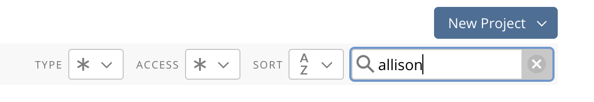
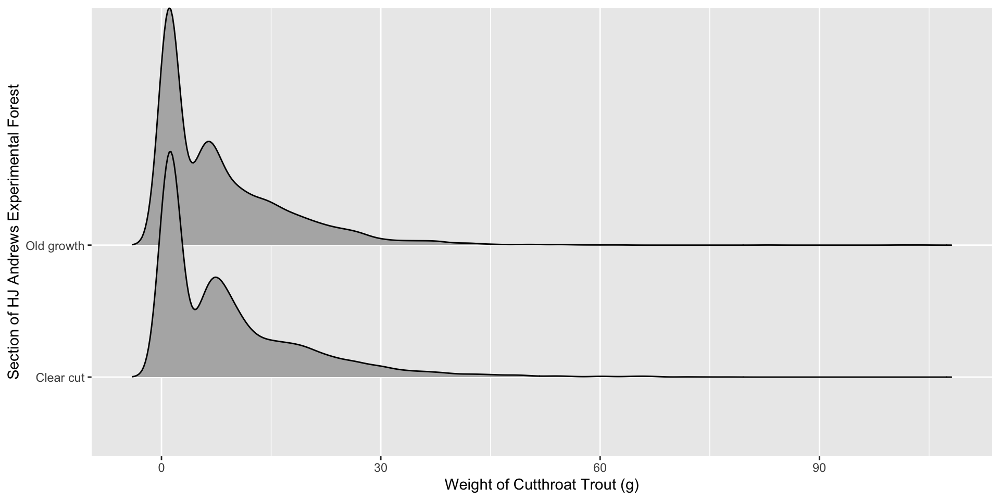
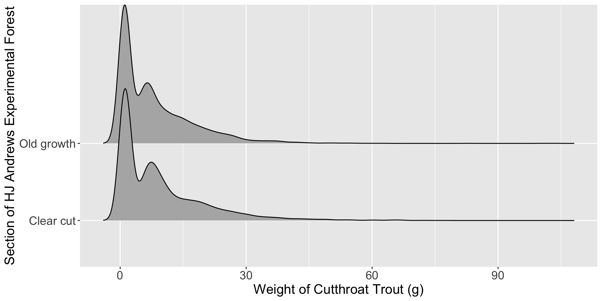

| year | sitecode | section | reach | pass | unitnum | unittype | vert_index | pitnumber | species | length_1_mm | length_2_mm | weight_g | clip | sampledate | notes |
|---|---|---|---|---|---|---|---|---|---|---|---|---|---|---|---|
| 2017 | MACKCC-L | CC | L | 1 | 2 | SC | 29 | NA | Cascade torrent salamander | 39 | 67 | 1.30 | NONE | 2017-09-05 | NA |
| 2003 | MACKCC-L | CC | L | 1 | 2 | SC | 48 | NA | Cascade torrent salamander | 33 | 55 | NA | NONE | 2003-09-02 | NA |
| 1995 | MACKOG-L | OG | L | 2 | 2 | C | 10 | NA | Coastal giant salamander | 26 | 49 | 0.70 | NONE | 1995-08-29 | NA |
| 2019 | MACKOG-U | OG | U | 1 | 12 | P | 13 | 1043544 | Coastal giant salamander | 120 | 192 | 50.00 | NONE | 2019-09-05 | NA |
| 2015 | MACKCC-U | CC | U | 1 | 9 | C | 75 | 19055544 | Cutthroat trout | 122 | NA | 17.14 | NONE | 2015-09-01 | RECAP |
| 2005 | MACKCC-L | CC | L | 1 | 2 | SC | 34 | NA | Cutthroat trout | 85 | NA | NA | NONE | 2005-08-31 | NA |
| 1995 | MACKOG-M | OG | M | 1 | 10 | S | 1 | NA | NA | NA | NA | NA | NONE | 1995-08-29 | JAM |
| 1995 | MACKCC-M | CC | M | 1 | 9 | SC | 1 | NA | NA | NA | NA | NA | NONE | 1995-08-30 | DRY |
Week 3 Day 2
STAT 313
Lab 1
Revisions Due Tonight
If you submitted revisions and your grade is still “Incomplete” – you forgot to submit reflections! Please add these as a comment to your assignment by the end of the day.
Lab 2
A Grading Reminder
“Complete” = Satisfactory
Your group obtained a “Success” on every question
“Incomplete” = Growing
Your group received a “Growing” on at least one question
Common Mistakes
- Units in axis labels (Q2 & Q9)
- What unit were the departure / arrival delays measured in?
- Justifying why I should expect to be early / late (Q8 & Q10)
- Why is the mean / median a reasonable estimate of the “typical” delay?
- What aspect(s) of the distribution did you use to decide what a “typical” delay is?
Copying the Lab – Last Week’s Recorder
The person who typed your lab needs to make their project “public”
- Open Posit Cloud
- Go to the STAT 313 workspace
- Click on “Your Content”
- Open the settings for your Lab 2 project
Copying the Lab – Last Week’s Recorder
- Change the access for your project to “Space Members”
Copying the Lab – Everyone Else
- Find your group member’s lab (you can use the search bar to search for their name)

- Open their Lab 2 project
- Select “Save a Permanent Copy”

Completing Revisions
Lab 2 revisions are due by Wednesday, April 24.
- Read comments on Canvas
- Copy your group’s lab assignment
- Complete your revisions
- Render your revised Lab 2
- Download your revised HTML
- Submit your revisions to the original Lab 2 assignment
Reflections
Revisions are required to be accompanied with reflections on what you learned while completing your revisions. These can be written in your Lab 2 Quarto file (next to the problems you revised), in a Word document, in the comment box on Canvas.
Ethical Considerations with Categorical Variables
Choosing What to Measure - Gender
Keller et al. (2017) designed a study to examine whether a community-based suicide prevention project could increase willingness to seek professional help for suicidal ideation among eastern Montana youth.
Students attending the Let’s Talk theater workshop, were asked to report their gender, race, and age.
Choosing What to Measure - Gender
Researchers provided students with the following question:
What is your gender?
Male, Female, Other
What information are the researchers missing?
Choosing What to Measure - Sex
\(\beta\) blockers have been shown to improve survival in patients with congestive heart failure. These medicines block the effects of the hormone epinephrine (adrenaline). Research suggests that beta blockers have a differing effect for individuals with high levels of estrogen (Khan and Movahed 2000).
Choosing What to Measure - Sex
The intake form for a local heart clinic asks the following question:
What is sex were you assigned at birth?
Male, Female, Other
What information are the doctors missing?
Choosing What to Measure - Race
Every year, the US publishes a large dataset on the public birth records for babies born that year. These data contain information about the baby, the pregnancy, and the birth parent(s).
Choosing What to Measure - Race
Looking at the births14 dataset, the race of the mother was classified as:
- white
- nonwhite
What information are researchers missing?
Lab 3
Today’s Data
The and_vertebrates dataset contains length and weight observations for Coastal Cutthroat Trout and two salamander species (Coastal Giant Salamander, and Cascade Torrent Salamander) in previously clear cut (c. 1963) and old growth coniferous forest sections of Mack Creek in HJ Andrews Experimental Forest, Willamette National Forest, Oregon.

Research Question
Are there differences in fish biomass between clear cut and old growth sections of the HJ Andrews Forest?
Data Layout
What are the observations / rows in this dataset?
If you wanted to find the mean mass for Cutthroat trout in each section, what would you do?
Step 1: Remove Salamanders
Step 2: group_by() + summarize()
# A tibble: 2 × 2
section mean_mass
<chr> <dbl>
1 Clear cut 9.38
2 Old growth 8.21Remember na.rm = TRUE is important if there are missing values!
Are they different?
| Forest Section | Mean Biomass |
|---|---|
| Clear cut | 9.380571 |
| Old growth | 8.213796 |
Would you conclude there is a difference in fish biomass between clear cut and old growth sections of the HJ Andrews Forest?
Let’s Make a Visualization!
Are they different?
Would you conclude there is a difference in fish biomass between clear cut and old growth sections of the HJ Andrews Forest?
Let’s Add in the Type of Channel
The channels (unittype) of the Mack Creek which were sampled were classified into the following groups:
"C"
"I"
"IP"
"P"
"R"
"S"
"SC"
NA
cascade
riffle
isolated pool
pool
rapid
step (small falls)
side channel
not sampled by unit
If you wanted to find the mean mass for Cutthroat trout for each type of channel in each section, what would you do?
group_by() Multiple Variables
# A tibble: 13 × 3
# Groups: section [2]
section unittype mean_mass
<chr> <chr> <dbl>
1 Clear cut C 8.47
2 Clear cut P 13.4
3 Clear cut R 8.06
4 Clear cut S 4.34
5 Clear cut SC 4.80
6 Clear cut <NA> 16.3
7 Old growth C 7.58
8 Old growth I 9.81
9 Old growth IP 1.39
10 Old growth P 10.4
11 Old growth R 6.66
12 Old growth SC 5.38
13 Old growth <NA> 13.4 Visualization 2.0 – Incorporating Color
Why put unittype on the y-axis instead of section???
Visualization 2.0 – Incorporating Color

Visualization 2.0 – Incorporating Facets
Visualization 2.0 – Incorporating Facets

References
Keller, Sarah N., and Timothy Wilkinson. 2017. “Preventing Suicide in Montana: A Community-Based Theatre Intervention.” Journal of Social Marketing 7 (4): 423–40. https://doi.org/10.1108/jsocm-12-2016-0086.
Khan, Nazim Uddin Azam, and Assad Movahed. 2000. “Role of ß Blockers in Congestive Heart Failure.” Congestive Heart Failure 6 (6): 299–312. https://doi.org/10.1111/j.1527-5299.2000.80176.x.